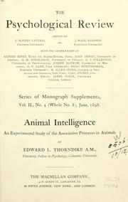

Animal Intelligence: Experimental Studies
Book·Edward L. Thorndike, 1898·动物智力：对动物联想过程的实验研究

Thorndike's doctoral dissertation, published in 1898 as a special supplement to Psychological Review. Using puzzle-box experiments, it observes learning in cats, dogs and chickens and proposes an early form of the law of effect.
- Author
- Edward L. Thorndike
- Year
- 1898
- Difficulty
- Advanced
- Kind
- Primary text
- Schools
- Law of Effect
Editions
- English edition Animal Intelligence: Experimental Studies Edward L. Thorndike · Macmillan, 1911 (expanded book edition) · 1911 Open Library ↗